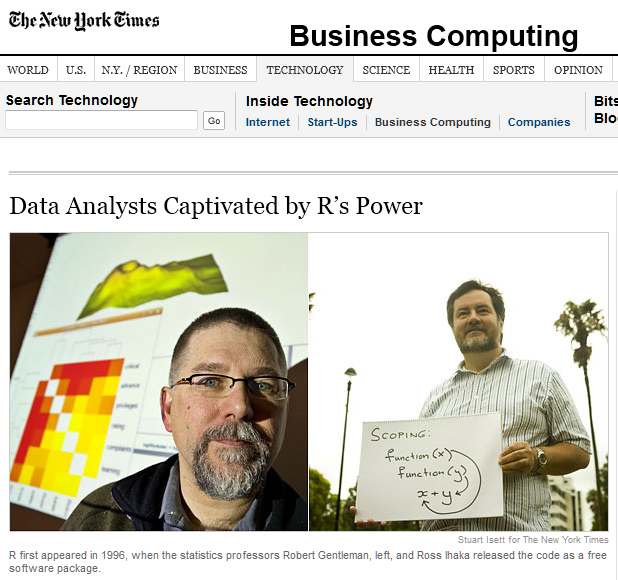
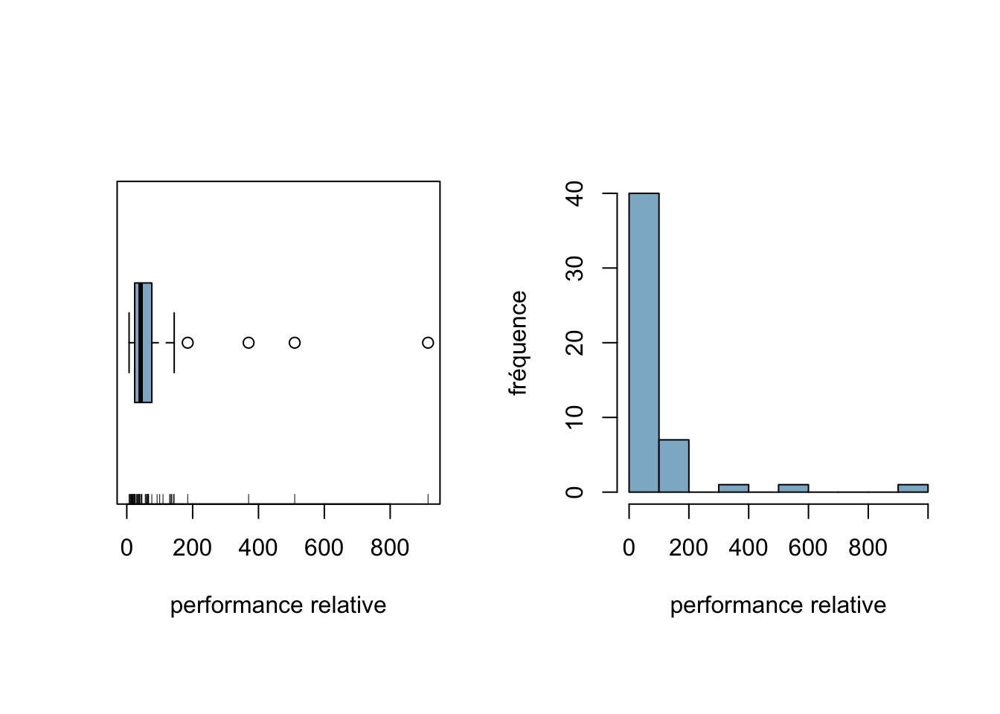
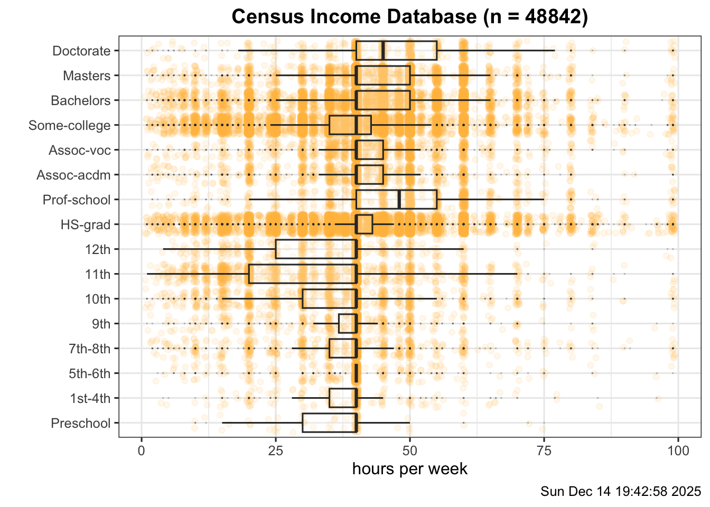
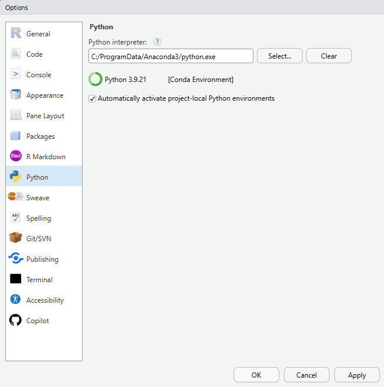
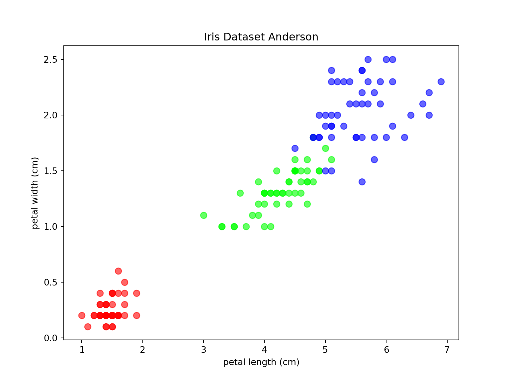
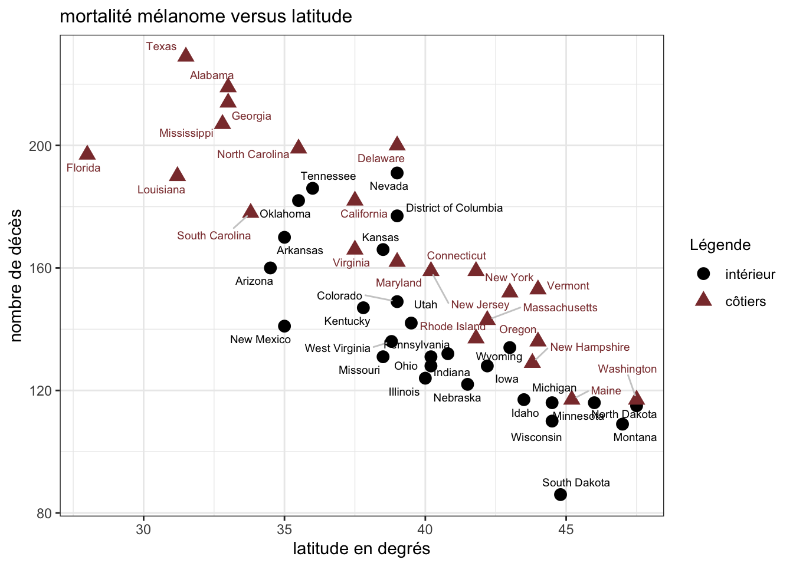

Analyse exploratoire des données
De la théorie à la pratique (TP 1)
Préambule
Le logiciel de statistique qui sera utilisé dans les travaux pratiques est R, logiciel libre distribué sous les termes de la GNU, General Public Licence, au site web du CRAN (Comprehensive R Archive Network).

Ce logiciel est disponible pour les systèmes d’exploitation Linux, Windows et Mac OS X. Des exécutables précompilés de la version actuelle R-4.5.1 (Great Square Root) sont disponibles sur l’un des miroirs du CRAN. Les instructions à suivre pour les installer s’y trouvent.
Pour faciliter votre apprentissage du logiciel, Emmanuel Paradis et Julien Barnier ont écrit de bonnes documentations françaises pour R, “R pour les débutants” et “Introduction à R”, qui se trouvent dans la page Moodle du cours.
Le logiciel de statistique R fonctionne principalement par commandes. L’attente de commandes, par défaut le symbole >, apparaît au démarrage du logiciel et indique que R est prêt à exécuter les commandes. Sous Windows, en utilisant l’interface R-GUI de R, certaines d’entre elles (par exemple accès à l’aide et ouverture de fichiers) peuvent être exécutées par les menus.
Le logiciel R, créé vers 1994 par Ross Ihaka et Robert Gentleman de l’Université d’Auckland, est davantage qu’un simple logiciel de statistique. Il s’agit non seulement d’un outil d’analyse statistique et graphique mais aussi d’un langage reposant sur le langage S créé par AT & T Bell Laboratories. John M. Chambers, l’un des créateurs de S, a reçu en 1998 le Software System Award de la prestigieuse ACM (“Association for Computing Machinery”).

Les possibilités offertes par R sont vastes et permettent à l’utilisateur d’effectuer des analyses de données très pointues. Le logiciel est reconnu pour sa flexibilité. En effet, les résultats d’une analyse sont stockés dans un “objet”; il est alors possible de n’afficher que la partie des résultats qui intéresse l’utilisateur. Cette facilité n’est pas offerte par tous les logiciels classiques. Notons que toutes les actions de R sont effectuées sur les objets présents dans la mémoire vive de l’ordinateur. Aucun fichier temporaire n’est utilisé. Pour mieux comprendre le fonctionnement de R, il est fortement recommandé de lire le chapitre 2 de l’aide d’Emmanuel Paradis (2005).
Le logiciel de statistique R nécessite un apprentissage qui peut paraître pénible et difficile en raison du recours aux commandes plutôt qu’aux menus déroulants.

Rassurez-vous, après s’être rapidement familiarisé avec quelques notions et concepts de base, l’utilisateur pourra employer efficacement le logiciel dont le fonctionnement reste finalement très intuitif. De plus, les commandes vous offrent un horizon de possibilités bien plus large que celui des menus déroulants. Un aide-mémoire des principales commandes de R figure dans le fichier “aide_memoire.pdf” qui se trouve dans la page Moodle du cours.
Une aide en ligne existe directement dans R. Elle est très utile pour connaître l’utilisation des fonctions du logiciel. Plusieurs méthodes existent pour y accéder : la première en utilisant la commande
Une deuxième possibilité consiste à utiliser l’alias de la commande help(), un point d’interrogation, ?mean, et finalement, une dernière variante revient à utiliser simplement le menu de l’interface R-GUI de R.
Un moteur de recherche pratique pour obtenir une aide supplémentaire et complète sur R, ses fonctions, ses librairies complémentaires et la programmation dans R est Rseek.org. L’utilisation de R peut aussi être facilitée en utilisant le Quick–R.
Pour les utilisateurs de Linux, Windows et Mac OS X, il existe un éditeur, RStudio IDE (Integrated Development Environment), encore plus convivial que celui que vous propose R par défaut. Il vous permet d’écrire et conserver des scripts dans lesquels figure une suite de commandes qui seront exécutées successivement. Vous pourrez lancer les scripts directement depuis l’éditeur sans avoir besoin de procéder à un “copier-coller”. Les scripts de commandes peuvent être archivés et accessibles à tout moment. Il est également possible d’afficher simultanément plusieurs fichiers contenant différents scripts et passer aisément de l’un à l’autre. La possibilité d’écrire des scripts, de les archiver, de les exécuter plusieurs fois en des temps différents est indéniablement un avantage par rapport à ce que vous proposent les logiciels à menus déroulants.
RStudio 1 vaut la peine d’être installé pour ses nombreux avantages. Cependant, si vous préférez, vous pouvez utiliser Visual Studio Code ou encore le tout dernier Positron. Positron qui se trouve à la croisée de R et de Python dans le vaste univers de la science des données vous permet de passer aisément de l’un à l’autre des deux langages.
Il est aussi possible d’écrire de manière simple ses propres fonctions. Sans entrer dans les détails, une fonction R est écrite dans un fichier sauvé au format ASCII avec extension .R. Comme les autres langages, R possède des structures de contrôle qui ne sont pas sans rappeler celles du langage C.
Lorsque vous terminez votre session R, n’oubliez pas d’en sauver une image. Elle vous permettra de conserver les objets et de récupérer les dernières commandes utilisées. Dans l’interface R-GUI de R, d’autres options très pratiques vous sont offertes comme par exemple charger et sauver l’environnement de travail (utile si vous travaillez sur plusieurs projets distincts), charger et sauver l’historique des commandes.
L’étudiant doit rendre un rapport du travail pratique dans lequel figurent les réponses aux questions posées, les commandes utilisées ainsi que les graphiques tracés. Il devra le rendre individuellement dans la page Moodle du cours avant la date butoir. Le rapport comptera le 15 % du premier travail écrit. L’étudiant sera aussi interrogé sur les travaux pratiques aux travaux écrits.
Utilisation de l'Intelligence Artificielle
Les rapports doivent être rédigés à l’aide de quarto®, système calligraphique libre conçu notamment pour écrire des documents scientifiques. Il se base sur Pandoc, logiciel libre permettant la conversion de documents en ligne de commande.
Le fonctionnement de quarto® pour créer un document est résumé dans la figure ci-dessous.

Sans entrer dans les détails, quarto®2 permet de générer des documents de manière dynamique en mélangeant texte et résultats obtenus à l’aide du code R. Les documents créés peuvent être notamment au format HTML, PDF, Word. Ainsi, quarto® est un outil très pratique pour exporter, communiquer et diffuser des résultats d’analyses statistiques. La librairie sous-jacente et fort élégante de R pour compiler, ou plutôt “tricoter” (knit en anglais), un document quarto® (.qmd) afin de visualiser le document généré est knitr. Elle crée entre autres un fichier .html dans lequel sont insérés les commandes, les sorties ainsi que les graphiques tracés. Vous avez entre vos mains ou à l’écran un document confectionné à l’aide de knitr 3.
La librairie knitr exécute les morceaux de code de R contenus dans le document quarto® que vous avez écrit et crée un document markdown (.md) qui contient le code et sa sortie. Brièvement, Markdown est un langage de balisage très commode. Pandoc se charge ensuite de transformer le fichier markdown en un document de format désiré, comme par exemple en format .html, .pdf et Microsoft® Word.
L’objectif de ce travail pratique consiste à se familiariser avec les commandes de base du logiciel R, à utiliser les techniques d’analyse pour une variable statistique puis deux et finalement à apprendre à rédiger des rapports d’analyse de données.
En route !
Introduction
Ce travail pratique a pour objectif d’explorer différentes techniques de visualisation et d’analyse de données en utilisant le langage de programmation R. Il nous est demandé d’étudié la manière de représenter graphiquement des données ainsi que d’interpréter les résultats à l’aide d’indicateurs statistiques tels que la médiane, la moyenne et les coefficients de corrélation. Enfin, il a pour but d’apprendre à rédiger des rapports d’analyse de données avec l’outil Quarto.
Exercice 1
L’une des forces de R est qu’il est capable de traiter de grands jeux de données de manière très rapide. Cet avantage a évidemment son prix : la lecture des données peut paraître ennuyeuse, particulièrement lorsqu’elles se trouvent sur support informatique. Il existe cependant plusieurs possibilités pour lire dans R des données contenues dans un fichier. Si elles se présentent sous la forme d’une liste de valeurs telles que chacune d’elles figure sur une ligne ou si elles sont séparées par un espace, on peut utiliser la commande scan() qui renvoie un vecteur. Lorsque les données se présentent sous la forme d’une table, i.e. une ligne par observation et une colonne par variable, l’instruction à utiliser est read.table() si les données se trouvent dans un fichier texte (ASCII). Des variantes de cette fonction existent comme par exemple read.csv2() 4. Dans cet exercice, nous allons enregistrer dans R les données qui seront utilisées dans le travail pratique. Vous pouvez organiser comme vous le souhaitez votre travail. Néanmoins, nous vous suggérons de créer deux répertoires : l’un contenant les données et l’autre votre travail (script, rapport, résultats). Pour être plus structuré, vous pouvez même ajouter un sous-répertoire à votre répertoire de travail pour y stocker vos graphiques; vous pouvez également créer un projet pour mieux gérer votre travail pratique.
a. Les données que nous allons traiter dans ce travail pratique se trouvent dans la page Moodle du cours. Copiez-les dans votre répertoire de données.
b. Charger les données dans R en utilisant les fonctions scan() et read.table().
Les utilisateurs se chargeront d’adapter les chemins à leur répertoire de travail et à leur système d’exploitation. Les fichiers cpus.txt et examen.txt sont ainsi accessibles dans R sous les noms cpus et examen respectivement.
c. Pour voir le contenu de l’objet cpus, taper l’instruction
[1] 76 18 22 144 12 185 38 24 45 38 65 141 44 58 12 510 370 66 915
[20] 25 30 66 36 14 26 92 7 36 133 66 24 10 36 100 60 33 40 19
[39] 16 130 62 21 32 64 24 110 11 56 46 136Il en est de même pour examen. Les objets cpus et examen sont de nature toute différente. En effet, le premier est un vecteur, le second un tableau de données, data.frame5 en anglais.
d. Pour accéder à la 17ème composante du vecteur cpus, utiliser la commande
e. Pour obtenir une partie du vecteur cpus comme par exemple les éléments du vecteur compris entre la 5ème et la 21ème composante, taper l’instruction
f. Pour extraire du vecteur cpus ses éléments supérieurs à \(250\), utiliser la commande
g. Il est possible d’accéder directement aux composantes d’une table par le nom. Par exemple, si on veut afficher la composante note de l’objet examen, on peut utiliser la commande
[1] 5.7 4.1 5.9 3.6 3.0 3.8 3.1 NA 5.3 3.0 3.7 4.7 4.0 4.6 4.1 4.2 3.2 3.1 4.7
[20] 4.9 3.7 3.6 4.1 NA 4.3 4.3 NA 3.3 3.6 3.4 NA 1.3 3.3 1.3 3.4 3.8 4.1 4.6
[39] NA 4.0 NA 2.3 3.5 4.0 3.2 3.4 NA 4.0 1.8 4.5 2.9 4.4 NAh. On peut aussi accéder en profondeur aux composantes comme par exemple par la commande
i. La méthode la plus simple pour créer un vecteur consiste à énumérer ses éléments à l’aide de la fonction c() :
[1] 2.9 3.4 3.4 3.7 3.7 2.8 2.1 2.5 2.6 1.5[1] "bleu" "vert" "blanc" "jaune" "noir" j. On peut ôter des composantes d’un vecteur en indiquant entre crochets les indices précédés du signe négatif comme par exemple
k. Finalement, le contenu de votre environnement de travail est affiché à l’aide de la fonction ls().
[1] "couleurs" "cpus" "data_files" "dataDir"
[5] "examen" "mesdonnees" "mod" "required_modules"Exercice 2
La performance relative au processeur IBM 370/158-3 de \(50\) processeurs d’ordinateurs a été relevée.
\[ \begin{array}{cccccccccc} 76 & 18 & 22 & 144 & 12 & 185 & 38 & 24 & 45 & 38 \\ 65 & 141 & 44 & 58 & 12 & 510 & 370 & 66 & 915 & 25 \\ 30 & 66 & 36 & 14 & 26 & 92 & 7 & 36 & 133 & 66 \\ 24 & 10 & 36 & 100 & 60 & 33 & 40 & 19 & 16 & 130 \\ 62 & 21 & 32 & 64 & 24 & 110 & 11 & 56 & 46 & 136 \end{array} \]
L’objet cpus contient les valeurs observées.

The decimal point is 2 digit(s) to the right of the |
0 | 111111222222223333344444445566666777789
1 | 01334449
2 |
3 | 7
4 |
5 | 1
6 |
7 |
8 |
9 | 2a. Constuire un diagramme branche-et-feuilles, une boîte à moustaches et un histogramme des données observées à l’aide des commandes ci-dessous.
Quels sont les effets de cette commande ?
stem(cpus)=> Génère un diagramme branche-et-feuillespar(mfrow=c(1,2), pty="s")=> Divise la fenêtre graphique en 1 ligne et 2 colonnes afin d’afficher nos deux graphiques côte à côte etpty="s"sert à tracer une région carréeboxplot(..., horizontal=T)=> Crée une boîte à moustaches horizontalrug(cpus)=> Ajoute de petits traits verticaux sur l’axe des abscisses.hist(...)=> Trace l’histogramme des fréquencespar(mfrow=c(1,1))=> Réinitialise ce qui à été mis par la cecipar(mfrow=c(1,2), pty="s")Quel est l’effet de la fonction
rug()?Cela permet de voir la densité des points et leur localisation
Observer les résultats obtenus par chaque commande.
b. Commenter la distribution des valeurs observées en se basant sur les graphiques de la Figure : valeur(s) atypique(s), asymétrie.
Valeurs atypiques : Il y a des valeurs atypiques vers la droite (185, 370, 510 et 915)
Asymétrie : La distribution est asymétrique à droite car les valeurs atypiques étirent la queue du côté des grandes performances et tirent la moyenne au-dessus de la médiane.
c. Calculer la performance relative médiane et la performance relative moyenne des valeurs alors observées en utilisant les fonctions de R adéquates.
Médiane : 42
Moyenne : 86.88
Est-il plus approprié d’utiliser la médiane ou la moyenne ?
La médianne est plus apropriée car elle ne prend pas en compte les valeurs atypiques qui ne sont pas réprésentative de la majorité de nos valeurs
d. Déterminer le(s) mode(s) des valeurs observées en complétant les commandes ci-dessous :
Les modes sont 24, 36 et 66 et elle apparaissent 3 fois chaqu une.
e. Que fait la commande suivante ?
Cela nous donne un résumé de nos donnée
Min. : La valeur minimale (7).
1st Qu. : Le premier quartile (24).
Median : La médiane (42).
Mean : La moyenne arithmétique(86.88).
3rd Qu. : Le troisième quartile (73.5).
Max. : La valeur maximale (915).
f. Décrire l’effet sur la moyenne et sur la médiane des trois interventions suivantes :
ajouter un processeur de performance relative \(41\);
La moyenne diminue elle passe à 85.98 et la médianne passe à 41 car on a 51 valeurs ce qui fait que l on prend la 26 eme qui est 41
soustraire \(7\) à chaque valeur observée;
La moyenne passe à 86.88 - 7 = 79.88 et la médianne passe à 42 - 7 = 35. c’ est comme si on faisait un décalage sur la gauche de 7
diviser chaque observation par \(3\).
la moyenne passe à environ 86.88 / 3 = 28.96 et la médianne 42 / 3 = 14.
g. Calculer l’écart-type des performances relatives une fois avec les valeurs atypiques et une fois sans en utilisant la fonction sd(). Les valeurs atypiques peuvent être déterminées à l’aide de la fonction boxplot() avec plot=FALSE comme argument.
[1] 148.4294[1] 38.5864Que constate-t-on ? L’écart-type est-il un indicateur robuste ?
Résultat
Écart-type avec valeurs atypiques : 148.4294
Écart-type sans valeurs atypiques : 38.5864
Il y a une très grande différence entre les deux car il fait fois 4 en ajoutant juste nos valeurs atypiques donc l’écart-type est tres sensible aux valeurs atypiques.
Exercice 3
Les étudiants suivant un cours de Mathématiques dans une école d’ingénierie ont passé l’examen de fin d’unité. Le cours était donné à \(53\) étudiants répartis en deux groupes notés A et C. Les résultats obtenus figurent dans la table ci-dessous et sont contenus dans l’objet examen.
| Table des notes selon les groupes | |||
| groupe | mode_de_formation | somme | note |
|---|---|---|---|
| A | EE | 47.0 | 5.7 |
| A | EE | 30.5 | 4.1 |
| A | EE | 49.0 | 5.9 |
| A | PT | 26.0 | 3.6 |
| A | TP | 19.5 | 3.0 |
| A | EE | 28.0 | 3.8 |
| A | TP | 21.0 | 3.1 |
| A | PT | NA | NA |
| A | TP | 42.5 | 5.3 |
| A | TP | 19.5 | 3.0 |
| A | TP | 26.5 | 3.7 |
| A | TP | 37.0 | 4.7 |
| A | TP | 29.5 | 4.0 |
| A | EE | 35.5 | 4.6 |
| A | PT | 30.5 | 4.1 |
| A | EE | 32.0 | 4.2 |
| A | EE | 21.5 | 3.2 |
| A | EE | 21.0 | 3.1 |
| A | PT | 36.5 | 4.7 |
| A | EE | 38.5 | 4.9 |
| A | EE | 27.0 | 3.7 |
| A | TP | 26.0 | 3.6 |
| A | EE | 31.0 | 4.1 |
| A | TP | NA | NA |
| A | TP | 32.5 | 4.3 |
| A | PT | 32.5 | 4.3 |
| A | EE | NA | NA |
| A | EE | 22.5 | 3.3 |
| C | TP | 25.5 | 3.6 |
| C | EE | 23.5 | 3.4 |
| C | TP | NA | NA |
| C | EE | 2.5 | 1.3 |
| C | TP | 23.0 | 3.3 |
| C | EE | 3.0 | 1.3 |
| C | EE | 24.0 | 3.4 |
| C | EE | 27.5 | 3.8 |
| C | TP | 31.0 | 4.1 |
| C | EE | 36.0 | 4.6 |
| C | TP | NA | NA |
| C | TP | 29.5 | 4.0 |
| C | EE | NA | NA |
| C | EE | 13.0 | 2.3 |
| C | EE | 24.5 | 3.5 |
| C | TP | 30.0 | 4.0 |
| C | EE | 21.5 | 3.2 |
| C | EE | 23.5 | 3.4 |
| C | EE | NA | NA |
| C | TP | 30.0 | 4.0 |
| C | EE | 8.0 | 1.8 |
| C | TP | 35.0 | 4.5 |
| C | TP | 18.5 | 2.9 |
| C | EE | 34.0 | 4.4 |
| C | EE | NA | NA |
On se demande si une différence significative existe entre les deux groupes à l’examen.
a. Tracer les boîtes à moustaches en parallèle en utilisant les commandes suivantes :
airforceblue<-"#5D8AA8"
par(pty="s")
boxplot(note~groupe, data=examen, ylim=c(1,6), xlab="groupe",
varwidth=T, col=airforceblue, main="examen")
abline(h=4, lty=2)
note.A <- split(examen$note, examen$groupe)$A
note.C <- split(examen$note, examen$groupe)$C
rug(note.A, side=2)# Côté gauche pour A
rug(note.C, side=4)# Côté droit pour C
b. Rajouter les bâtonnets des notes des étudiants des deux classes, sur le côté gauche des boîtes à moustaches pour la classe \(A\) (side=2 comme argument de la fonction rug()) et sur le côté droite pour la classe \(C\) (side=4 comme argument de la fonction rug()).
Indication : pour séparer puis enregistrer les notes des étudiants selon les groupes, on peut utiliser les commandes
c. En se basant sur la Figure, existe-t-il une différence significative entre les deux groupes à l’examen de fin d’unité ?
On peut voir que les deux boites a moustaches ont une partie commune mais la médianne du groupe A (4.1) est supérieur à celle du groupe C (3.45). En plus le 3 eme quartile du groupe C est en dessous de la médianne du groupe A. Donc oui il y a une grosse différence entre les deux car plus de 50% du groupe ont au dessus de 4 alors que le groupe C a plus de 50% des notes en dessous de 4
d. Observe-t-on sur les boîtes à moustaches une différence entre les dispersions des deux groupes ?
On peut voir que pour le groupe A la moustache supérieur est nettement plus grande que celle du bas. C’est l’inverse pour le groupe C on peut meme y voir une valeurs qui est en dehors .
Donc le groupe C a une étendue totale beaucoup plus grande, descendant jusqu’à 1.3, alors que le minimum du groupe A est 3.0.
e. Calculer les écarts-types des deux groupes à l’aide des fonctions by() et sd().
examen$groupe: A
[1] 0.8093207
------------------------------------------------------------
examen$groupe: C
[1] 0.9800107
Groupe A : 0.81
Groupe C : 0.98
En se basant sur les écarts-types, existe-t-il une différence en dispersion entre les deux groupes à l’examen de fin d’unité ?
Oui il y a une différence. L’écart-type du groupe C est environ 20% plus élevé que celui du groupe A. Ce qui nous remontre que les notes du groupe C sont plus dispersées.
f. Que peut-on déduire en comparant les conclusions établies en c., d. et e. ?
Niveau : Le groupe A est meilleur (Médiane 4.1 contre 3.45).
Homogénéité : Le groupe A est plus homogène (Écart-type plus faible).
Meilleur note : Le groupe C contient les notes les plus basses (1.3) et une plus grande variabilité, tirant sa moyenne vers le bas.
g. Un autre graphique pour étudier les éventuelles différences entre les deux groupes à l’examen de fin d’unité se trouve dans la Figure.
À votre avis, entre les boîtes à moustaches en parallèle et le graphique tracé ci-dessus, lequel est le plus approprié ?
Les boîtes à moustaches
Car Vu qu’on a pas beacoup de donnée le diagramme de densité peut nous créer des fausses bosses par exmple tout à gauche du groupe C alors qu’il y a qu’une seul valeur.
On voit mieux la quantité de personne qui ont réussi l’examen grace à la bar à 4 ce qui permet de nous représenté si la médiane est au dessus ou pas.
Exercice 4
Une partie de la base de données du recensement américain6 de \(1994\) a été extraite. Elle concerne \(48'842\) personnes adultes dont on s’intéresse notamment à l’influence que peut avoir le type de scolarité, formation acquise par l’individu, sur le nombre d’heures de travail par semaine. Par simplicité et pour préserver l’authenticité du système éducatif américain, le nom des variables n’est pas traduit en français.
a. Nous nous proposons de tracer les boîtes à moustaches en parallèle du temps consacré au travail par les individus recensés. Pour y parvenir, nous utilisons la librairie ggplot27 qu’il faut d’abord installer puis activer dans votre session.
La librairie ggplot2 explicite les liens conceptuels entre graphiques et analyses statistiques. Sa syntaxe est particulière mais ingénieuse. Elle se base sur un ensemble de composants indépendants qui peuvent être combinés de différentes manières8.
Les données du recensement se trouvent dans la librairie arules de R qui doit être installée puis activée.
Les observations sont lues dans le logiciel à l’aide de la commande
et les variables qui nous intéressent sont sélectionnées et stockées dans l’objet dframe par les commandes
'data.frame': 48842 obs. of 2 variables:
$ education : Ord.factor w/ 16 levels "Preschool"<"1st-4th"<..: 14 14 9 7 14 15 5 9 15 14 ...
$ hours_per_week: int 40 13 40 40 40 40 16 45 50 40 ...a. Pourquoi ce changement de nom de variable ?
Car - est l’opérateur de soustraction ce qui peut provoquer des erreur avec R
Tracer les boîtes à moustaches en parallèle de la Figure dans lesquelles est représenté le temps hebdomadaire consacré au travail par les Américains recensés selon leur formation.
library(ggplot2)
n=dim(na.omit(dframe))[1]
today<-format(Sys.time(), "%a %b %d %X %Y")
ggplot(dframe, aes(x=hours_per_week, y=education)) +
geom_point(colour="#FFBA49", alpha=0.1, position="jitter") +
geom_boxplot(outlier.size=0, alpha=0.2) +
theme_bw(base_size=12) +
theme(
legend.position="none",
plot.title=element_text(hjust=0.5, face="bold")) +
labs(
color="",
fill="",
x="hours per week",
y="",
title=paste("Census Income Database (n = ",n,")", sep=""),
#subtitle = "(EE)",
caption = today
)
Peut-on distinguer deux groupes de types de formation dans ce graphique ? Dans l’affirmative, énumérez-les. Dans la négative, expliquez pourquoi on ne parvient pas à séparer les types de formation en deux groupes.
Oui on peut voir un groupe abec une médiane identique a 40h par semaine et l autre groupe sont ceux qui travaille plus entre 45 et 50h par semaine et leur boite s étende beaucoup vers la droite indiququant que certaine personne travaille beaucoup plus alors que pour le premier groupe la majorité des boites penches du coté gauche.
Groupe 1 : toutes les formations allant de Preschool jusqu’à Assoc-acdm( pas prof-school)
Groupe 2 : Masters, Prof-school et Doctorate
b. Calculer la proportion d’observations contenant des valeurs manquantes en utilisant les commandes ci-dessous.
[1] 48842 15[1] 0.38245770.3824577
c. En se basant sur les boîtes à moustaches en parallèle de la Figure, pour quel type de formation observe-t-on la plus petite dispersion du temps de travail ? Existe-t-il une différence entre les médianes des types de formation ? En donner brièvement la raison.
Dispersion : Les boîtes les plus petite sont celles du bas. la plus petite est 5th-6th
Oui. Comme expliqué au dessus la majorité est à 40h mais les Prof-school et Doctorate ont une médiane plus élevée
Pour la raison les emplois peu qualifiés ont des contrats à horaires fixes (35-40h), tandis que les ceux qui font de la recherche ou prépare des cours doivent finir un tache avant de pouvoir finir leur journée ce qui entraîne des horaires plus longs et variables.
d. Pour chaque type de formation, on peut déterminer puis afficher à l’écran le temps maximal de travail hebdomadaire. Compléter les commandes ci-dessous pour y parvenir.
dframe$education: Preschool
[1] 75
------------------------------------------------------------
dframe$education: 1st-4th
[1] 96
------------------------------------------------------------
dframe$education: 5th-6th
[1] 99
------------------------------------------------------------
dframe$education: 7th-8th
[1] 99
------------------------------------------------------------
dframe$education: 9th
[1] 99
------------------------------------------------------------
dframe$education: 10th
[1] 99
------------------------------------------------------------
dframe$education: 11th
[1] 99
------------------------------------------------------------
dframe$education: 12th
[1] 99
------------------------------------------------------------
dframe$education: HS-grad
[1] 99
------------------------------------------------------------
dframe$education: Prof-school
[1] 99
------------------------------------------------------------
dframe$education: Assoc-acdm
[1] 99
------------------------------------------------------------
dframe$education: Assoc-voc
[1] 99
------------------------------------------------------------
dframe$education: Some-college
[1] 99
------------------------------------------------------------
dframe$education: Bachelors
[1] 99
------------------------------------------------------------
dframe$education: Masters
[1] 99
------------------------------------------------------------
dframe$education: Doctorate
[1] 99La formation pour laquelle un temps maximal minimal a été observé se détermine par les commandes
Est-ce surprenant ?
On trouve Preschool
Non car il y a tres peux de personne qui n’ont que l’éducation préscolaire. ils accèdent à des emplois souvent moins flexibles et avec des plus petit horaire
e. En s’inspirant des commandes utilisées ci-dessus, déterminer la formation pour laquelle la distribution des temps de travail se caractérise par le plus grand écart-type.
[1] "Prof-school"On trouve Prof-school ce qui nous indique que les professions qui sortent des écoles supérieure ont la plus grande variabilité brute dans leurs horaires
f. Observe-t-on un résultat similaire en utilisant l’étendue interquartiles à l’aide de la fonction IQR()?
Non, le résultat est différent l’écart-type était maximal pour Prof-school mais l’étendue interquartile est maximale pour le groupe 11th. On obtient se résultat car l’IQR montre que la dispersion des 50% centraux est plus grande pour le groupe 11th ce qui veut dire que les horraires de travailles sont plus hétérogène
[1] "11th"
ggplot2
Exercice 5
Estimer et justifier les valeurs des coefficients de corrélation des séries de données à l’aide de leurs graphiques de nuage de points tracés dans la Figure 2, la Figure 3, la Figure 4 et la Figure 5.
Estimation : entre 0.8 et 0.9
Justification : Il y a une tendance linéaire positive Le nuage de points est assez resserré autour d’une ligne qui relie le bas a gauche et le haut à droite du graphique , ce qui indique que la corrélation est proche de 1 mais pas totalement parfaite
Estimation : null ou egale à 0
Justification : Les points sont dispersés de manière aléatoire dans tout le plan, sans former de motif particulier. Il n’y a aucune tendance visible à la hausse ou à la baisse.
Estimation : très proche de 0
Justification : Il y a une forme de V mais cela ne forme pas de ligne particulière. Vu que l’on commence par une descente puis une montée les deux s annule casiment
Estimation : entre -0.7 et -0.9
Justification : On voit une tendance linéaire négative mais je trouve que les donnée sont plus dispersé que dans la figure 7
Exercice 6
Une étude a été réalisée en botanique sur \(150\) iris. Cinq variables ont été relevées : la longueur (Sepal.Length) et la largeur (Sepal.Width) des sépales, la longueur (Petal.Length) et la largeur (Petal.Width) des pétales, l’unité utilisée étant le centimètre, ainsi que l’espèce (Species) de la fleur (Setosa, Versicolor et Virginica).
Ces données, qui avaient été récoltées par Edgar Anderson, se trouvent déjà dans R. Pour les utiliser dans votre session actuelle, il suffit de taper dans la console le nom de l’objet, iris, qui les contient.
a. Utiliser les librairies skimr et summarytools pour afficher les sorties qui permettent d’effectuer une analyse exploratoire des données observées. Pour la librairie skimr appliquer la fonction skim() à l’objet iris; appliquer la fonction dfSummary() à l’objet iris pour la librairie summarytools.
b. La distribution de la largeur du sépale (Sepal.Width) est-elle plutôt symétrique ?
Oui on voit une forme centrée un peu sur la gauche
c. La distribution de la longeur du pétale (Petal.Length) est-elle unimodale ou bimodale ?
Elle est bimodal car on voit deux bosses
d. Tracer le nuage de points de la largeur (Petal.Width) versus la longueur (Petal.Length) des pétales des iris en utilisant les librairies ggplot2 et ggforce et en complétant les commandes ci-dessous.
library(ggplot2)
library(ggforce)
pCol <- c('#057076', '#ff8301', '#bf5ccb')
plot.iris <- ggplot(iris, aes(x=Petal.Length, y=Petal.Width, col=Species)) +
scale_color_manual(values=pCol) +
scale_x_continuous(breaks=seq(0.5, 7.5, by=1), limits=c(0.5, 7.5)) +
scale_y_continuous(breaks=seq(-0.5, 3, by=0.5), limits=c(-0.5, 3)) +
labs(title="Edgar Anderson's Iris Data",
x="Petal Length",
y="Petal Width") +
theme(plot.title=element_text(size=12, hjust=.5),
axis.title=element_text(size=10, vjust=-2),
axis.text=element_text(size=10, vjust=-2)) +
geom_point(aes(color=Species), alpha=.6, size=3) +
theme_minimal()
plot.iris +
ggforce::geom_mark_ellipse(
aes(fill=Species, label=Species),
alpha=.15, show.legend=FALSE
)
e. En se basant sur le graphique de nuage de points, existe-t-il une relation entre la largeur et la longueur des pétales des iris ? Dans l’affirmative, de quelle nature est-elle ?
Oui on peut voir plus le pétale est long, plus il est large ce qui nous indique une relation linéaire et positive
f. Remarque-t-on des observations inhabituelles dans le graphique de nuage de points ?
On voit que l’espèce Setosa est isolée en bas a gauche ce qui nous montre la distribution bimodale vue en c.
En plus on voit une zone de chauvchement entre Versicolor et Virginica mais Setosa est isolé
En plus on ne voit pas de valeur aberrante
g. Déterminer la corrélation entre la largeur et la longueur des pétales des iris en utilisant la fonction cor().
0.9628654
On trouve un corrélation positive tres forte
h. Quelle valeur attribueriez-vous à la longueur des pétales des iris pour distinguer les iris Setosa des deux autres espèces ?
Une valeur de 2.5 cm permet de séparer les iris Setosa des autres car ils ne dépassent pas 2cm mais pour prendre un peu de marge je choisi 2.5cm
i. Des animations peuvent être créées dans R en utilisant la librairie gganimate. Un exemple peut être conçu en utilisant le code ci-dessous.


j. Installer la librairie reticulate qui permet de faire du Python à partir de RStudio IDE. Fixer ensuite l’interpréteur Python dans la rubrique Python de la boîte de dialogue Options. Cette boîte de dialogue s’affiche à l’écran en utilisant le menu Tools puis Global Options… de RStudio IDE. Si nécessaire, il faut créer un environnement Python et y installer les librairies.

La lecture de l’objet iris de R en Python s’effectue en utilisant la commande
Reconstituer le graphique ci-dessous en utilisant en particulier les librairies pandas, numpy et le module matplotlib.pyplot de la bibliothèque matplotlib de Python.
import pandas as pd
import matplotlib.pyplot as plt
df = r.iris
colors = {'setosa': '#FF0000', 'versicolor': '#00FF00', 'virginica': '#0000FF'}
plt.figure(figsize=(8, 6))
for species, color in colors.items():
subset = df[df['Species'] == species]
plt.scatter(subset['Petal.Length'], subset['Petal.Width'],
label=species, color=color, alpha=0.6, s=50)
plt.title("Iris Dataset Anderson")
plt.xlabel("petal length (cm)")
plt.ylabel("petal width (cm)")
plt.show()
Exercice 7
Pour étudier le cancer de la peau (mélanome maligne), des données avaient été relevées auprès d’hommes de population blanche vivant dans les états américains entre \(1950\) et \(1969\). On se demandait si des relations pouvaient exister entre plusieurs variables statistiques telles que les données géographiques (longitude et latitude du centre de chaque état), l’océan (états côtiers ou états intérieurs) et le nombre de décès dus au cancer de la peau; la dernière variable, variable observée dans chaque état américain, est considérée comme variable réponse.
Les données se trouvent dans la librairie HSAUR3 de R qui doit être installée puis activée.
a. Reconstituer en utilisant les librairies ggplot2 et ggrepel de R le graphique de nuage de points ci-dessous entre le nombre de décès dus au cancer de la peau et la latitude. Associée aux points, on a ajouté une couleur différente pour les états côtiers et pour les états intérieurs et une légende indique de quel état il s’agit.
library(HSAUR3)
library(ggplot2)
library(ggrepel)
data("USmelanoma", package = "HSAUR3")
df_melanoma <- USmelanoma
df_melanoma$state <- row.names(USmelanoma)
cols <- c("yes" = "#8B3A3A", "no" = "black")
# 17 = Triangle plein, 16 = Cercle plein
shapes <- c("yes" = 17, "no" = 16)
ggplot(df_melanoma, aes(x = latitude, y = mortality, color = ocean, shape = ocean, label = state)) +
geom_point(size = 3.5) +
geom_text_repel(
size = 2.5,
box.padding = 0.3,
point.padding = 0.3,
segment.color = "grey80",
max.overlaps = 20
) +
scale_color_manual(values = cols, labels = c("intérieur", "côtiers")) +
scale_shape_manual(values = shapes, labels = c("intérieur", "côtiers")) +
labs(
title = "mortalité mélanome versus latitude",
x = "latitude en degrés",
y = "nombre de décès",
color = "Légende",
shape = "Légende"
) +
theme_bw() +
theme(
legend.position = "right",
legend.title = element_text(size = 10),
plot.title = element_text(size = 12)
)
b. En se basant sur le graphique, existe-t-il une relation entre le nombre de décès dus au cancer de la peau et la latitude ?
Oui, il existe une relation linéaire négative. On voit que lorsque la latitude augmente la ou on va vers le Nord, où il y a moins de soleil la mortalité a tendance à diminuer. Inversement, les états du Sud ont des taux de mortalité plus élevés.
c. A-t-on plus de décès dus au cancer de la peau dans les états côtiers ou dans les états intérieurs ?
Il semble y avoir légèrement plus de décès dans les états côtiers, mais la différence n’est pas flagrante. On peut voir que les triangles par rapport au cercle à meme latitude sont souvent situé plus haut
d. Tracer le graphique interactif ci-dessous en utilisant la librairie altair de Python.
import altair as alt
import pandas as pd
data = r.df_melanoma
chart = alt.Chart(data).mark_point().encode(
x=alt.X('latitude', scale=alt.Scale(domain=[10, 50])),
y='mortality',
color='ocean',
tooltip=['state', 'mortality', 'latitude', 'ocean']
).interactive()
# sauvegarde sous .html car ne s'affiche pas
chart.save('melanoma.html')
chartConclusion
Ce travail pratique a permis d’apprendre l’utilisation des commandes de R pour créer les diagrammes étudiés en cours.
J’ai exploré diverses techniques de visualisation pour une seule variable, telles que le diagramme de branches et feuilles, l’histogramme et les boîtes à moustaches. Ces outils ont été associés à des statistiques descriptives pour analyser les résultats obtenus. J’ai également comparé différents indicateurs et fait la distinction entre ceux qui sont robustes, comme la médiane, et ceux qui sont sensibles aux valeurs extrêmes, comme la moyenne.
J’ai ensuite abordé les techniques de visualisation pour deux variables, en utilisant les nuages de points et les coefficients de corrélation, afin d’interpréter les relations entre les observations. J’ai appris à rédiger un rapport d’analyse de données en utilisant Quarto.
Code d’honneur
Je soussigné Nathan Füllemann, atteste sur l’honneur ne pas avoir fait appel à l’intelligence artificielle pour rédiger ce rapport.
Lieu et date : Vufflens-la-Ville, le 14.12.2025 Signature électronique : Nathan Füllemann
Le rapport doit
être rédigé avec soin en utilisant quarto®;
contenir une introduction dans laquelle se trouve les objectifs de l’analyse de données ainsi qu’une conclusion pour synthétiser le travail pratique;
contenir les réponses aux questions posées;
contenir les commandes de R utilisées, les résultats et graphiques obtenus;
être rendu sur la page Moodle du cours en format .html ou .pdf avant la date butoir.
Notes de bas de page
RStudio; la société qui développe l’interface s’appelle Posit PBC depuis novembre 2022.↩︎
Mickaël Canouil a réuni de nombreuses contributions, notamment des modèles, à l’adresse quarto. Elles nous permettent de se familiariser avec le système calligraphique.↩︎
Des tutoriaux, démonstrations et exemples se trouvent à l’adresse knitr.↩︎
Pour de plus amples informations, voir “R pour les débutants”, E. Paradis, 2005, pages 12–16.↩︎
Pour de plus amples informations, voir “R pour les débutants”, E. Paradis, 2005, pages 12.↩︎
Par intérêt, un coup d’oeil à l’adresse du Gouvernement Américain.↩︎
Une librairie correspondante, plotnine, a été mise à disposition des utilisateurs de Python.↩︎